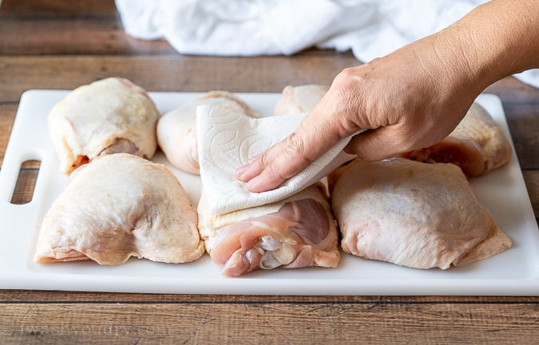
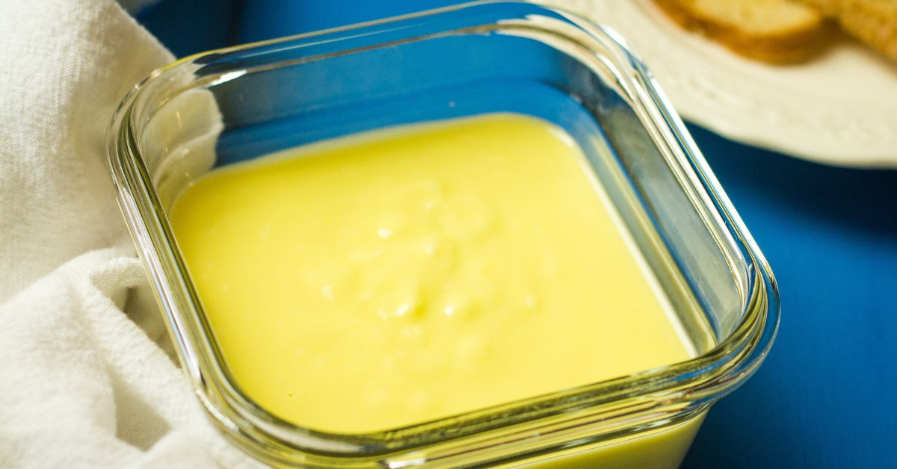
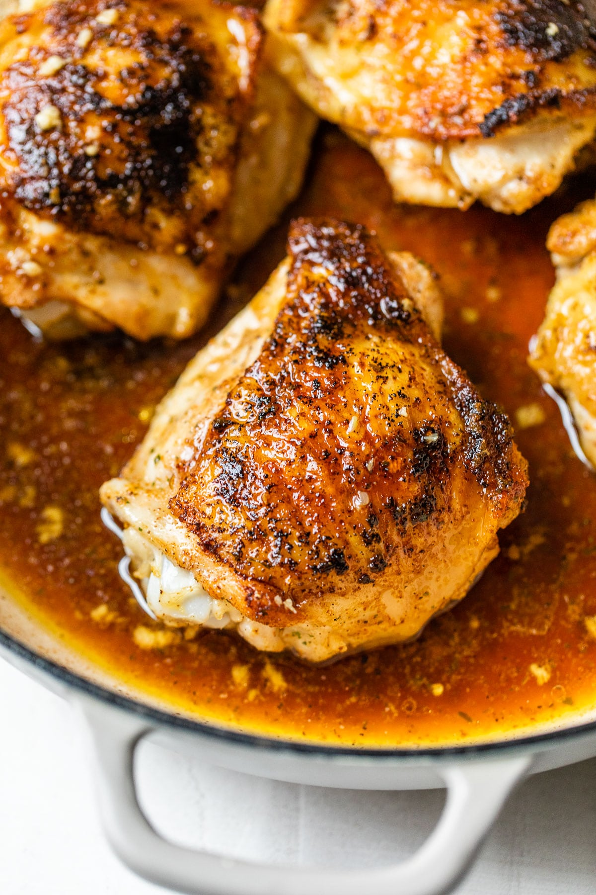
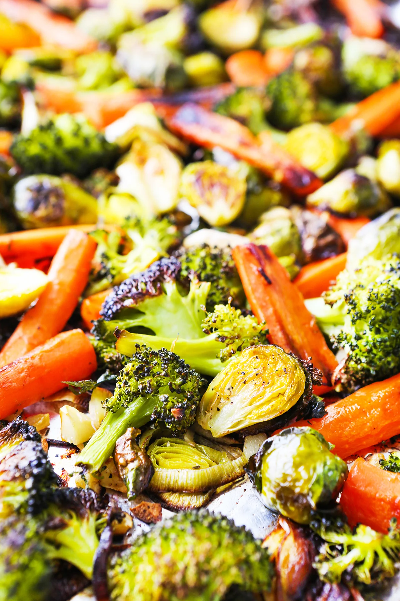
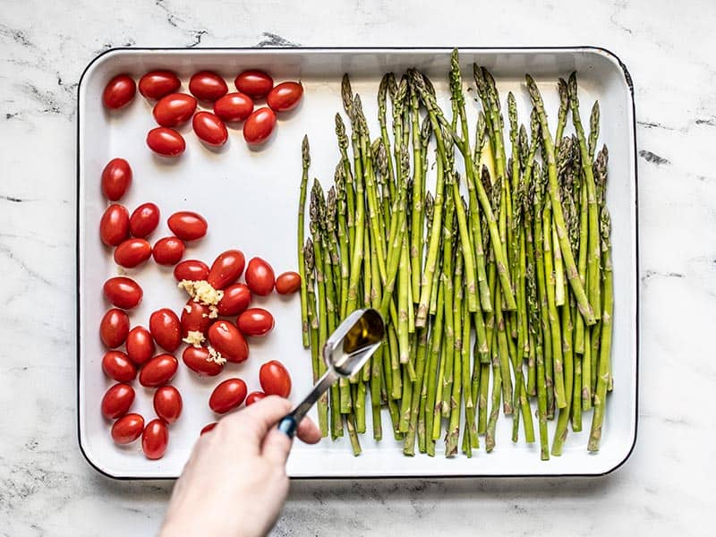
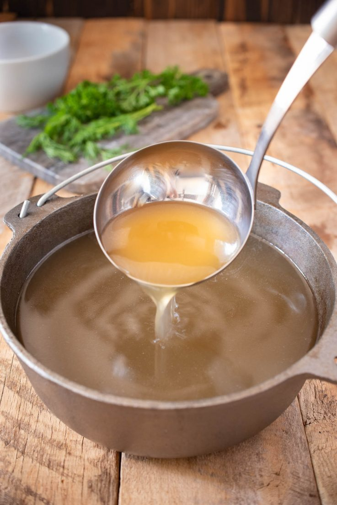

Chicken Parmesan with Vegetables

Description
This one-pan creamy Parmesan chicken and vegetables
dish is a colorful skillet meal and a great way to add some
vegetables to your family’s diet.
It’s also a great way to use any small amounts of fresh produce on hand.
Serve with pasta or rice, if you prefer.
Add a simple green salad and some bread for a complete and tasty dinner.
Ingredients
- 2 pounds boneless skinless chicken thighs
- 1/2 teaspoon Italian herb seasoning
- salt and freshly ground black pepper to taste
- 2 tablespoons olive oil, divided
- 2 tablespoons unsalted butter, divided
- 1 cup diced onion
- 1/2 teaspoon red pepper flakes, or to taste
- 1 cup diced mushrooms
- 1/2 red bell pepper, sliced lengthwise
- 1 cup broccoli florets
- 1 small zucchini, sliced in half vertically, then sliced crosswise
- 1 cup matchstick-cut carrots
- 8 spears fresh asparagus, cut into 1-inch pieces
- 1/2 cup cherry tomatoes, halved
- 4 cloves garlic, minced
- 3/4 cup chicken broth
- 1 cup frozen peas, thawed
- 3/4 cup heavy cream
- 3 ounces finely-grated Parmesan cheese
- fresh flat-leaf parsley sprigs for garnish (optional)
Steps
- Pat chicken thighs dry with paper towels a
nd season with Italian seasoning.
Season with salt and pepper.

- Combine 1 tablespoon olive oil and 1 tablespoon unsalted butter
in a large, non-stick skillet or wok over medium-high heat.

- When oil is hot and butter is bubbling,
add chicken thighs and cook until browned, 5 to 7 minutes.
Turn chicken, reduce heat to medium-low, cover,
and cook until juices no longer run pink, about 5 minutes more.
An instant-read thermometer inserted near the center should
read at least 165 degrees F (74 degrees C).

- Remove chicken from the skillet, place on a serving platter,
and keep warm.
- To the same pan, over medium high heat,
add remaining olive oil and butter, and allow butter to melt.
Stir in onions and red pepper flakes and cook 1 to 2 minutes,
then add mushrooms and bell peppers. Cook an additional 2 minutes,
stirring frequently.
- Add broccoli florets, zucchini, and carrots.
Cook, stirring, 1 to 2 minutes.

- Add asparagus, tomatoes, and garlic; cook until garlic is fragrant,
about a minute.

- Pour in chicken broth and allow to come to a boil.
Reduce heat to a simmer and stir in peas. When broth is lightly bubbling,
add cream slowly, stirring, and stir in Parmesan cheese.

- To serve place 2 chicken thighs on each plate and top with vegetables
and Parmesan cream. Garnish with fresh flat-leaf parsley. Serve warm.